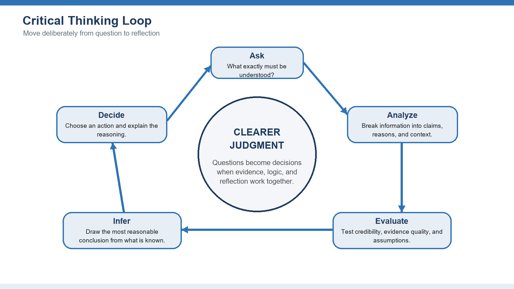
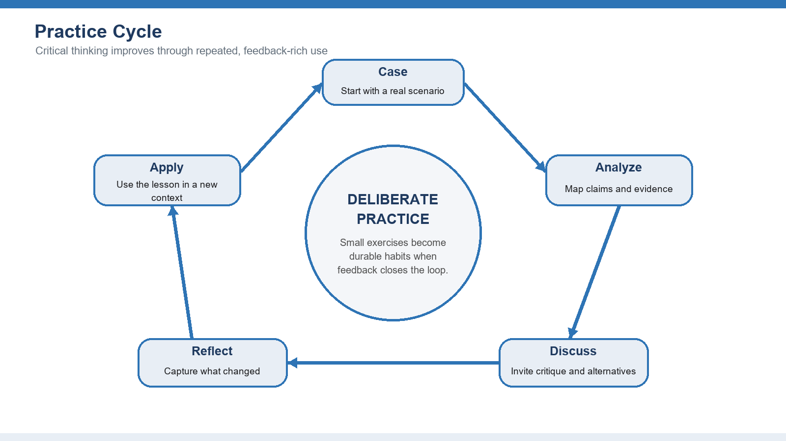

🧠 Critical Thinking
Think clearly, decide well, and stop fake news from fooling you — in six short modules, free.
Each module is a quick read with a real social-media example, then a short quiz. Score 80% to pass — and you can retry as many times as you need. At the end, a quick self-check shows where you’re strong and where to grow.
1. Pause before you believe
- Say in your own words what critical thinking is — and what it is not.
- Notice when a claim pulls on your emotions instead of giving you reasons.
- Use four simple questions on anything before you accept it.

Every day your phone fills with things people swear are true: a voice note, a screenshot, a “my cousin the nurse said…”, a post with 10,000 shares. Some of it is real. A lot of it is wrong, exaggerated, or built to get a reaction out of you.
Critical thinking is one habit: stop for a few seconds and ask “wait — is this actually true?” before you believe it or forward it. You don’t need a diploma. It’s a skill, like cooking or driving, and you get better with practice.
What it really means
Critical thinking is weighing the reasons and the evidence before you decide what to believe or do. It’s slow on purpose. It keeps you from being fooled, and it lets you explain why you think something instead of just feeling it.
What it is NOT
It’s not being negative, and it’s not arguing to win. It’s not doubting everything either. You can question a claim without insulting the person who made it, and stay open without swallowing anything you’re told.
Why it’s worth it for you
It protects your money from scams, your name from spreading lies, and your peace from pointless fights. Your choices get better because they rest on reasons, not just mood.
The mindset
Stay curious, patient, and honest enough to say “I might be wrong.” The strongest thinkers aren’t the ones who are always sure — they’re the ones willing to change their mind when the facts change.
- A nice graphic, that claim, 8,000 shares. Before your thumb hits “forward”, run four questions:
- What do I actually know? Lemon water is fine to drink, but “cures diabetes” is a huge claim.
- How do I know it? No doctor, no study, no source — just a pretty image.
- What am I assuming? That popular means true. Shares are not proof.
- What would a careful person ask? “Where’s the evidence?” There’s none — so you don’t share it, and maybe you gently tell whoever sent it.
Watch out for
- Treating confidence as proof — loud and sure is not the same as correct
- Forwarding because it “feels true” or makes you angry
- Thinking that many shares or likes means it’s real
Try it yourself
- Write down one thing you strongly believe, and the real reason you believe it.
- Find one fact that could prove you wrong — and sit with it for a minute.
- Explain the difference between “I’m not sure, show me” and “I refuse to listen.”
Words to know
| Critical thinking | pausing to weigh evidence and reasons before you decide |
| Assumption | something you treat as true without checking |
| Evidence | facts or data that actually back up a claim |
📝 Quick quiz — score 80% to pass (retry as many times as you need)
1. Critical thinking mostly means…
2. A post has 10,000 shares. That tells you…
3. Before forwarding “lemon water cures diabetes”, the best move is…
💬 Discussion — Module 1
A question, a real example, a disagreement about this module? Share it here, respectfully.
Community rule: attack ideas, never people. Cite your sources.
2. Spot the trick in an argument
- Tell the conclusion (the claim) apart from the premises (the reasons).
- Recognise five common tricks and say why each one is weak.
- Judge whether an argument is strong — not just whether you like it.

People try to convince you all day — adverts, politicians, preachers, and that one uncle in the family group chat. Most of the time they’re not lying outright; they’re using a trick that sounds strong but isn’t.
Once you can see the simple bones of an argument — the claim, and the reasons for it — those tricks stop working on you.
Claim and reasons
Every argument has a conclusion — the thing it wants you to accept — and premises, the reasons given for it. Words like “because”, “so”, and “therefore” are signposts, but many arguments hide their reasons, so look for them even when the words aren’t there.
The common tricks
Watch for: attacking the person instead of their point; offering only two choices when more exist; scaring you instead of proving anything; twisting what someone said to knock it down; and “everyone knows it”, which is not evidence.
How to judge it
Ask three things: Are the reasons believable? Do they actually support the claim? What’s missing — a hidden assumption, or an example that breaks it?
Sure vs likely
Some arguments aim for certainty; most real-life ones only make something likely — and that’s fine. Just judge how strong the support is, and don’t treat “probably” as “definitely.”
- Notice what just happened: the post didn’t give you a reason — it gave you a guilt trip.
- The claim: you should share this. The “reason”: otherwise you’re heartless.
- The trick: a false choice (share, or you’re a bad person) wrapped in fear and guilt.
- Reality: caring about children and sharing a random post are two different things. Don’t let the emotion move your thumb — ask where the actual information is.
Watch out for
- Reacting to the tone instead of the reasoning
- Throwing out a whole point because one small part is weak
- Assuming every confident statement is actually an argument
Try it yourself
- Pick a short opinion post and underline the one main claim.
- Write each reason in your own words and link it to the claim.
- Name one objection — does the argument still stand?
Words to know
| Premise | a reason given to support a claim |
| Conclusion | the claim an argument is trying to get you to accept |
| Fallacy | a move that sounds convincing but is weak reasoning |
| False choice | being offered only two options when more exist |
📝 Quick quiz — score 80% to pass (retry as many times as you need)
1. The conclusion of an argument is…
2. “Share this or you don’t care about children” is an example of…
3. To judge an argument, you should ask…
💬 Discussion — Module 2
A question, a real example, a disagreement about this module? Share it here, respectfully.
Community rule: attack ideas, never people. Cite your sources.
3. Check before you trust
- Size up a source by who made it, whether they’d know, and what they want.
- Tell a real first-hand source from someone just repeating it.
- Decide whether the evidence is strong, weak, or simply not there.

Anyone with a phone can post anything. A screenshot is not proof. A confident voice note is not proof. Before you trust a claim — especially a shocking one — take ten seconds to ask where it actually comes from.
This one habit — checking the source — will save you from most of the false information travelling through WhatsApp, TikTok and Facebook.
Check the source
Ask: Who is saying this? Do they actually know the subject? What do they gain if you believe it? When was it posted? Can you trace it to something solid? An anonymous account with no link sits at the bottom of the ladder.
Everyone has a slant
Every source has a point of view. A slant doesn’t make something useless, but it tells you to weigh it carefully and look for the other side.
What counts as good evidence
Strong evidence is relevant, enough, and gathered in a trustworthy way. One dramatic story can grab you, but a single example is not proof of a general pattern.
First-hand vs second-hand
A first-hand source is the original — the real data, the actual document, the person who was there. Second-hand is someone summarising it. When it really matters, go back to the original.
- Scary, urgent, and zero source. Perfect conditions for a lie.
- Do a 20-second check: search the exact claim. Does any real news outlet report it?
- If only random accounts and forwarded screenshots carry it, treat it as false until proven.
- Find the original: a real announcement has a date, a name, and a place you can verify. No original, no trust — and definitely no forwarding.
Watch out for
- Trusting a polished design more than a clear, checkable source
- Using old information for something that changes fast
- Treating one example as if it were the whole pattern
Try it yourself
- Take two posts that make the same claim and note where they agree and differ.
- Trace one statistic back to where it first came from.
- Rate a claim’s evidence as strong, okay, weak, or none — and say why.
Words to know
| Source | where a piece of information comes from |
| First-hand source | the original: data, a record, someone who was there |
| Second-hand source | someone repeating or summarising the original |
| Transparency | whether you can see how they got the information |
📝 Quick quiz — score 80% to pass (retry as many times as you need)
1. A screenshot with no link is…
2. A first-hand (primary) source is…
3. “BREAKING: government banned X”, forwarded with no link. Best move…
💬 Discussion — Module 3
A question, a real example, a disagreement about this module? Share it here, respectfully.
Community rule: attack ideas, never people. Cite your sources.
4. Don’t let your own mind fool you
- Explain, simply, what a bias is — and what “confirmation bias” means.
- Run a short routine that cools a biased decision down.
- Step into someone else’s shoes to test if you’re being fair.

The hardest person to catch fooling you is yourself. Your brain loves shortcuts — fast and usually fine, but they quietly push you toward what you already wanted to believe.
On social media this is everywhere: you share the post that fits your side without checking, and scroll past the one that doesn’t. Spotting your own bias is the most honest skill there is.
Mental shortcuts
Biases are shortcuts your mind takes automatically. They help with small everyday choices, but they mislead you when the stakes are high or the situation is new — shaping what you notice, remember, and ignore.
Confirmation bias
The big one: you look for, believe, and remember whatever fits what you already think — and quietly filter out the rest. It feels like “doing your research” while you’re really just collecting agreement.
How to fight it
You beat bias with routines, not willpower. Slow down. Name the bias. Go looking for the evidence that would prove you wrong. Compare with the other side. Write your reason down before you know how things turn out.
See it from their side
Picture the situation through the other person’s goals and information. You don’t have to agree — it just makes your judgement fairer.
- A juicy negative post about a public figure you can’t stand pops up. Your thumb is already moving to share.
- Honest test: if a GOOD story about that same person appeared, would you share it this fast? Probably not — that’s confirmation bias.
- Run the routine: pause, name it, check for a source, ask if you’d believe it about someone you like.
- If it doesn’t pass, don’t share. Spreading a lie you wanted to be true is still spreading a lie.
Watch out for
- Assuming bias only affects other people, never you
- Finding one source that disagrees and calling that “balanced”
- Confusing “this makes me uncomfortable” with “this is wrong”
Try it yourself
- Describe a recent decision and name the bias that might have nudged it.
- Find one solid source that argues against your first opinion.
- Argue the opposite side for three minutes before going back to your view.
Words to know
| Bias | an automatic mental shortcut that can mislead you |
| Confirmation bias | seeing only what agrees with what you already think |
| Disconfirming evidence | facts that could show you’re wrong |
| Perspective-taking | seeing a situation through someone else’s eyes |
📝 Quick quiz — score 80% to pass (retry as many times as you need)
1. Confirmation bias is…
2. The honest test before sharing a bad rumour about someone you dislike…
3. You beat bias mostly with…
💬 Discussion — Module 4
A question, a real example, a disagreement about this module? Share it here, respectfully.
Community rule: attack ideas, never people. Cite your sources.
5. Turn problems into clear decisions
- Write a problem as the gap between where you are and where you want to be.
- Compare your options against clear standards, not just gut feeling.
- Dig past the symptom to the real cause.

The same skill that protects you from fake posts also helps with real decisions — money, family, work, your community. The mistake most people make is jumping straight to a solution before they understand the problem.
Slow down, name the problem clearly, look at a few options, and find what’s really causing it.
Name the real problem
A good problem statement says where you are now, where you want to be, and who’s affected — with some sign the problem is real. A weak one jumps straight to a favourite solution.
Weigh your options
Compare options against what matters: impact, cost, risk, time, fairness. Don’t grab the first thing that works before you’ve looked at better ones.
Make the thinking visible
Simple tools — a pros-and-cons list, a small table, or asking “why?” five times — pull your reasons into the open so the trade-offs are clear.
Find the root cause
Look under the symptom. Keep asking “why?” until you reach the real condition keeping the problem alive.
- A few alarming videos go viral and suddenly “everyone knows” it’s unsafe. Before you panic or move:
- Name the real question: has crime actually risen, or did a couple of clips just spread fast?
- Check: real numbers, or only viral posts? Ask why it feels worse → more videos → easier to film and share → not necessarily more crime.
- Decide on the evidence, not on the feeling the feed gave you.
Watch out for
- Fixing the symptom instead of the cause
- Picking your favourite option, then choosing standards that flatter it
- Forgetting to plan how you’ll carry it out and check it worked
Try it yourself
- Rewrite a vague worry as a clear “where I am vs where I want to be.”
- List at least three possible solutions before judging any of them.
- Use three standards to compare options and explain your final choice.
Words to know
| Problem statement | the gap between where you are and where you want to be |
| Criteria | the clear standards you use to compare options |
| Root cause | the real reason behind a surface symptom |
| Five Whys | asking “why?” again and again to reach the cause |
📝 Quick quiz — score 80% to pass (retry as many times as you need)
1. A good problem statement…
2. The “Five Whys” helps you find…
3. “Everyone online says the area is dangerous.” Best response…
💬 Discussion — Module 5
A question, a real example, a disagreement about this module? Share it here, respectfully.
Community rule: attack ideas, never people. Cite your sources.
6. Make it a daily habit
- Keep a simple record of your decisions and how they turned out.
- Give and take feedback on the reasoning, not the person.
- Pick one small habit to practise every day.

A skill you don’t use fades. The good news: social media hands you free practice every single day. Every post is a chance to ask one quiet question before you react.
The goal isn’t to doubt everything — it’s to make “pause and check” as automatic as looking before you cross the road.
Practise on real cases
Don’t just memorise definitions. Use a real, messy situation and work out the facts, the unknowns, and your options.
Short, repeatable reps
Keep it small enough to do often: spot one trick a day, rank two sources, or note one decision. Small reps beat one big effort.
Use it in real life
Critical thinking earns its keep outside any classroom — checking news, making a purchase, settling an argument, planning your money.
Keep improving
Compare what you expected with what happened, jot down the lesson, and ask someone to poke holes in your reasoning.
- Before you share anything, count to ten and ask one question: “Do I actually know this is true?”
- If yes — who said it, and can I check it? If no — don’t forward, and maybe ask the sender where it came from.
- Do this for one week and you’ll feel the habit forming. You become the person in the group chat who slows the rumours down.
- That quiet pause, repeated, is critical thinking in action.
Watch out for
- Practising only abstract definitions, never real situations
- Dodging feedback because criticism feels personal
- Learning it in theory but never using it when it counts
Try it yourself
- Keep a one-week journal: the claim, the evidence, your assumption, your decision, the result.
- Ask a friend to challenge your reasoning — your logic, not your character.
- Choose one habit (like the 10-second pause) and do it every day for a month.
Words to know
| Decision journal | a short log of your claim, evidence, assumption, decision and result |
| Feedback | comments on your reasoning that help you improve |
| Habit | something you do automatically, without forcing it |
📝 Quick quiz — score 80% to pass (retry as many times as you need)
1. The 10-second pause is for…
2. Good feedback challenges…
3. A skill you don’t use…
💬 Discussion — Module 6
A question, a real example, a disagreement about this module? Share it here, respectfully.
Community rule: attack ideas, never people. Cite your sources.
How are you doing? — a quick self-check
Be honest with yourself: for each skill, where are you right now? This is a private mirror, not a grade.
Reading an argument
Judging evidence
Catching your own bias
Solving problems